Blog Posts
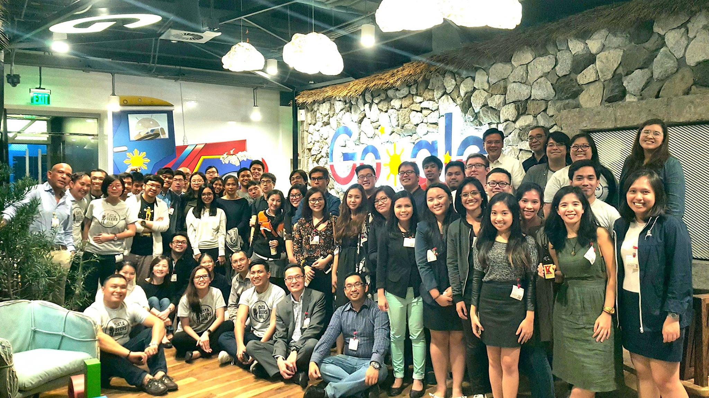
On Databeers Manila
I spoke at Databeers Manila. The event was one of the best ones I've gone to in Manila, and definitely eye-opening to see more and more dataphiliacs in the country!

On Minimalistic Maps: Mapping Population Density in the Philippines
We take a break and try to plot some cool minimalistic plots of population density in the Philippines.
On Facebook News in the Philippines: Using topic modeling to find trends in online news coverage
Facebook has become one of most visible sources of news in the Philippines, and it has arguably played a huge role in shaping Filipino views. We take a look at how the Philippines news cycle evolved with by using topic modeling.
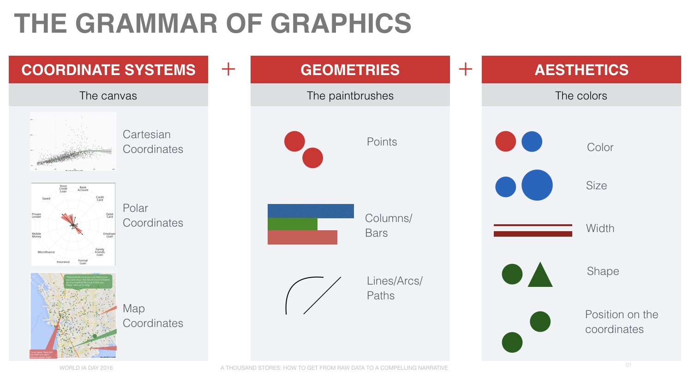
On Data Visualization Design
I was invited to speak last year at the World Information Architecture Day 2016 in Manila on data visualization design and use cases. The video is available for viewing.

Fête wisely this 2016
The gist is music-lovers the world over celebrate Fête dela Musique --- World Music Day --- in June every year. In the Philippines this year, the 22nd Fête will be held on 18 June 2016 in Makati. With that much stages, it can be a very daunting task though. So how do we do make it easier? Let's follow the data.

On the Elections: Election Fingerprints
In this elections series, we'll explore various aspects of the 2016 Philippine National Elections, from fraud detection to the differences in how our country votes. In this first instalment, we learn about election fingerprints and how they may be used to detect fraud in the form of ballot stuffing or vote padding.
On Scientific Studies, P-Hacking, and Media Irresponsibility
John Oliver lays down the problems with public perceptions of scientific studies shaped by the media.

On Academics and Bridging the Gap
Academics can change the world – if they stop talking only to their peers
On Coverage and Capacity: A look at school capacity in the Philippines (EduData Part 2)
Students require rooms, students, and operating budgets in order to receive a proper education. The question is, which resources are in short supply? How does this differ across different parts of the country? Let's find out how the school system is holding up in this second installment of the EduData Series.
On Schools and Survival: A look at dropout rates in the Philippines (EduData Part 1)
In what grade level are students most likely to drop out? Are females or males more likely to stay in school? We'll explore delays and dropouts in the Philippine education system with data from the Department of Education in this first installment of the EduData series.
On the MRT: A Capacity Conundrum
The Metro Rail Transit Line 3 (MRT) has been operating at 142% capacity since 2004. New prototype trains have been scheduled to arrive in 2015, but the actual deployment will still be in the following year. How bad is the current train situation? Let's find out through data!
On Why the Hero Generation is an Informed One (TEDxDLSU)
Businesses and governments in the Philippines should adopt a data mindset - where intuition and personal experience are always backed up by data and an effort to see the entire picture is always made - in order to realize the benefits of entering the demographic window.
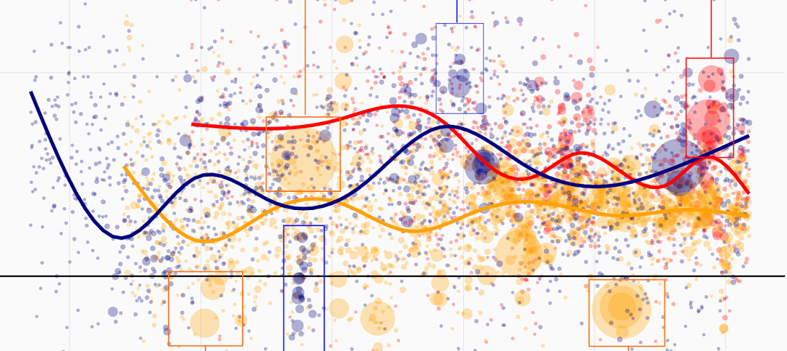
On Airline Agitation: Flight networks and what Facebook comments say about customer satisfaction
The airline industry is one of the most competitive industries in the Philippines, and has recently undergone a wave of consolidation, rebranding, and restructuring in an effort to capture Filipinos' growing love for air travel. By analyzing Facebook comments and flight network data, we can shed light on how the key players are competing in this space.
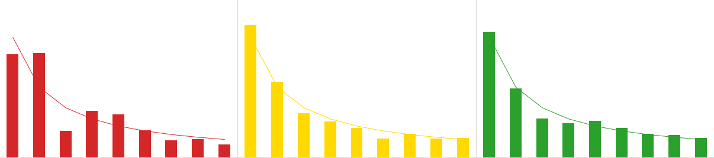
On Benford's Law: Determining import fraud risk using customs data
If you were to think of the first digits of a group of related variables, say, tax payments, it would be intuitive to think that the digits would more or less be evenly distributed between 1 to 9. However, it turns out that the exponential nature of growth makes it such that the first digits are more likely to be 1's than any other number.
On Coffee Coverage: Starbucks store density in Metro Manila
Some people just can't start the day without having a cup of coffee. By taking a look at the city-specific distribution of Starbucks stores around Metro Manila, we can see where the coffee guzzlers are located.
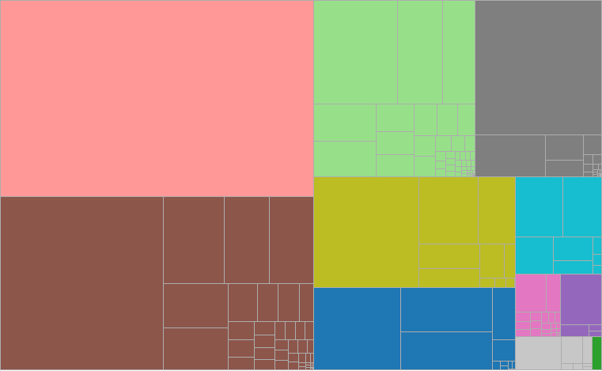
On Taxes versus Sales: How large is government compared to publicly-listed corporations?
Have you ever wondered how government finances compare to the largest publicly-listed corporations in the country? When the financial bulk of private entities outweigh that of the public purse, it may give rise to undue influence over regulation and legislation. Data from public company disclosures and Department of Finance can help us investigate the matter.
On Imperial Manila, Modernization Failure, and Comparative Advantage: A close look at regional accounts
With traffic jams and port congestion an all-too-common sight in the Philippine capital, there is growing sentiment that development should be moved away from the metropolis and into other regions. What does the data, particularly regional accounts from the Philippine Statistics Authority, have to say?
On the Effectiveness of Higher Sin Taxes: Losing Steam? (2014 Q2 Update)
We update our assessment on the effectiveness of sin taxes with fresh national accounts data for the second quarter of 2014, and learn that sin taxes may be losing steam - smokers and drinkers may be having a hard time kicking the habit.
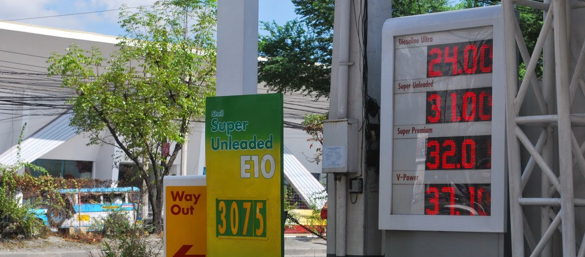
On Pump Prices: Where can you gas up for less?
What providers let your stretch you gas money for more miles? Where is it more economical to gas up? Data from the Department of Energy's price watch can provide some data-driven answers to these questions.
On the Economics and Data of Love, Dating, and Relationships
Last Valentine's Day, I was asked by my former college organization to deliver a talk on the "data of love, dating, and relationships" as part of their Young Economists' Lecture and Learning Series at De La Salle University.
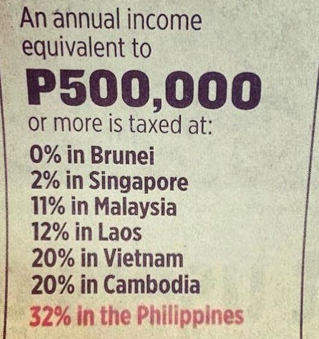
On Taxes: Do Filipinos really pay the highest taxes among ASEAN countries?'
Congress is moving to lower income tax rates for Filipinos, with impetus from a report by the Tax Management Association of the Philippines (TMAP) asserting that Filipinos pay the highest income tax rates in Southeast Asia. Let's investigate this claim and determine whether the argument holds water.
On Presidential Priorities (July 2014): Aquino moves toward legacy
The annual State of the Nation Address (SONA) of the President of the Philippines, when distilled using word counts, can provide insight into the pressing issues of the day. We update [our original post ](/2014/02/sona-words.html) to include the latest 2014 SONA by President Aquino.
On Pork and Plunder: The numbers behind the Priority Development Assistance Fund (PDAF) scam
In one of the rarest moments in Philippine history, three high-ranking lawmakers were arrested on charges of plunder related to the Priority Development Assistance Fund (PDAF), or pork barrel scam.
On Latin Honors: How hard is it to get to the top?
An article from the Inquirer takes a look at how there are more latin honors graduates in Philippines colleges and universities than in years past. We can view comparative data for selected universities to know, more or less, how much weight a *cum laude* title carries for a particular school.
On the Overweight and Obese: 1 in 4 Filipino adults are overweight, 1 in 20 are obese
A report by the Institute for Health Metrics and Evaluation reveals that obesity for both children and adults is on the rise in the Philippines. While girls are less prone to obesity than boys early on, this trend reverses as they become adults. However, both sexes are still losers in the battle of the bulge, as obesity rates increase as they age.
On the S&P Credit Rating Upgrade: The Numbers Behind BBB
Ratings agency Standard & Poor's (S&P) has raised the Philippines sovereign credit rating from BBB- to BBB, making it fully in the ranks of investment-grade sovereign debt. Let's look through those three B's and look at the data behind their decision.
On Purchasing Power Parities, the Big Mac Index, and the International Comparison Programme
The GDP per capita of the Philippines exceeds that of India by 55%, but the cost of living is so much cheaper in India that if you account for cheaper goods and services, that difference narrows to only 20%. In this first installment of Numbersense, we will take a look at purchasing power parities and why they are important for cross-country comparisons.
On the Filipino Migration and Remittances: The grass is still greener on the other side
The Filipino diaspora has been a relatively well-documented phenomenon, as poor circumstances in the domestic economy nudge others to seek greener pastures abroad. But where exactly do these people go, and how have the trends changed since 1990? Also, are there any people coming in to the country? Let's take a look at the data.
On Inflation and Poverty: It's getting more expensive to be poor
Because the prices of various goods and services rise and fall at different rates, different groups of people, most notably the poor, experience the burden of inflation much more than the rest of the population.
On What It Means to Be Filipino: Quantifying the Filipino Psyche
What's important in life? What do you want in a job? Is suicide justifiable? Would you want a drug addict as a neighbor? How many children would you like to have? Do you have confidence in the church? Find out how Filipinos responded to these types of questions using data from the World Values Survey.
On Delays and Dropouts: A Data Primer on Education
Using new data from the Department of Education, we can take a look at the current state of Philippine education. Is everyone being educated, is it inclusive, and teachers being paid enough? Find out in this article.
On Fraud and Fake Ballots: Detecting election fraud through data
Election fraud in the Philippines is almost always alleged, but never really proven. We can explore an approach that can identify voting data patterns those most likely to be associated with vote padding - adding fake ballots - and find out how the sanctity of the ballot can be preserved by the thoughtful use of election data.
On Using Data to Choose your Next Vacation Destination
Are you looking for somewhere to lose yourself, experience new things, or just sit back and relax? We can take data on flights from the Philippines and construct a circular dendogram that allows you to view all your potential destinations and the airlines that service the route at a single glance.
On the Probability of Mortality
Everything carries a risk, and nothing has preoccupied the human mind more than the risk of death. What are the safest (and most dangerous) modes of transportation? What activities commonly regarded as risky, really are? Let's find out.
On Corruption and Collusion: Immoral acts are more likely when there are others with which to share the blame
They say corruption is 'infectious,' and you risk being 'eaten up by the system' when you enter government. In this article, we take a look at evidence that reveals how individual morality can be dampened if you have cohorts to share the blame with you, among other factors.
On Presidents and Priorities: Distilling the Numbers out of the State of the Nation Address
The President's annual State of the Nation Address (SONA) is a strong indicator of an administration's priorities and accomplishments, but how do we compare across presidents? We can distill the SONA into numbers and count instances of national issues mentioned in the speech to find out and compare. You can also explore the speeches yourself using an interactive SONA word counter.
On the Philippine IT-BPO Industry: "Bayaning Puyat" or Dead-end Job?
The call center industry, or more widely called IT-BPO, has received its fair share of praise for contributing to economic and job growth, but a job in this industry still carries the stigma of low pay and low skill. We can take a look at the IT-BPO industry using data from the Bangko Sentral ng Pilipinas to shed some light on the graveyard shift.
On Getting to Know the Filipino Informal Settler
How well do you know the Filipino informal settler? Is he poor and underprivileged? What happens if you force him to pay rent? Well, short of actually starting a conversation with one, we can get to know the Filipino informal settler through data. Read on to find out more.
On Maximizing Your Interview Chances: Schedule it right after a break
If you have an interview coming up, whether it be for a job, award, or in this particular study, parole, your chances are best when the interviewers are fresh from a break. A group of researchers at the National Academy of Sciences confirmed what we had suspected all along - happy tummies make happy decisions. Read on to find out more!
On Your Life Expectancy: Chronic Behaviors and Longevity Returns
Everyone says that smoking can drastically reduce your life expectancy by introducing all sorts of complications, but the question is: how much of your life are you sacrificing, stick by stick? Know the answer to this question and for many other chronic behaviors by reading on!
On Hot Hands and Shooting Streaks: Does "momentum" in basketball really exist?
Basketball fans and players alike will attest to the 'hot hand' phenomenon, where the chances or a player making the shot are much higher following a series of successful shots than the chances following a miss. In this article, we feature a journal article that debunks this phenomenon as merely a figment of fans' imaginations.
On Trains and Tribulations: The LRT South Extension and Fare Hikes
The Light Rail Transit Line 1 South Extension Project is now out for bidding, with the contract to be awarded in the second quarter of this year. The rail system is under intense public scrutiny amidst talks of fare hikes, but as in most cases, a look at the data can lend some meaningful context to these debates: fare hikes, capacity constraints, and South Extension feasibility.
On Holiday Weight Gain and New Years' Resolutions
Now that the holidays are over and a new year has started, it's time to take stock of the weight we have gained, and to decide how to stick to our recurring new year's resolution of getting that Bora body in time for summer. To help with that, let's take a look at holiday weight gain data and listen to a podcast on commitment devices - self-imposed punishments that keep you focused on the goal.
On Christmas in the Philippines
Christmas festivities in the Philippines are world-renowned. Spectacular light displays, early morning mass, and smiles all around make it hard to be in the island nation during this time of the year and not feel the spirit of Christmas. Let's take a look at the data and see how we can quantify Christmas in the Philippines.
On Philippine Foreign Trade: USA vs China
The world is in the middle of an epic struggle for political influence between the USA and China, but what does this mean for Filipinos, who are trapped in the middle, both in the geographic and political sense? We can take a look at the data on one of the avenues of influence, foreign trade, and find out a little bit more.

On the Effectiveness of Sin Taxes in the Philippines: 2013 Q3 Update
SIN TAXED - How effective are higher sin taxes at reducing alcohol and tobacco consumption? Some say it's a 'tax on the poor' and it would only lead to downshifting to cheaper, more dangerous brands, others are all for it, armed with the basic principle of demand. Newly released 3rd quarter national accounts can shed light on the situation.
On iPhone Exchange Rate and Tax Arbitrage: In which country can you buy the least expensive iPhone?
ARBITRAGEURS REJOICE - Due to exchange rate and tax differences, the effective cost of your favorite gadget can vary from country to country, so if you're looking to buy yourself or a loved one an iPhone or other similar item during your Christmas vacation, here the most attractive 'iPhone tourism' sites. Read on to find out more.
On the Best Webcomics for your Inner Nerd
If you're looking for a place to get laughs, there are various free webcomics that can cater to your inner egghead (don't kid yourself - everyone has one), so here are six webcomics that can start you off, and how to subscribe to them.
On the Globe iPhone Forever Plan: Am I just ''paying for the phone''?
Globe Telecom has recently announced a new postpaid plan for iPhone-loving subscribers. You can trade-in your old iPhone every year for the latest model, provided that you abide by a lock-in period, of course.
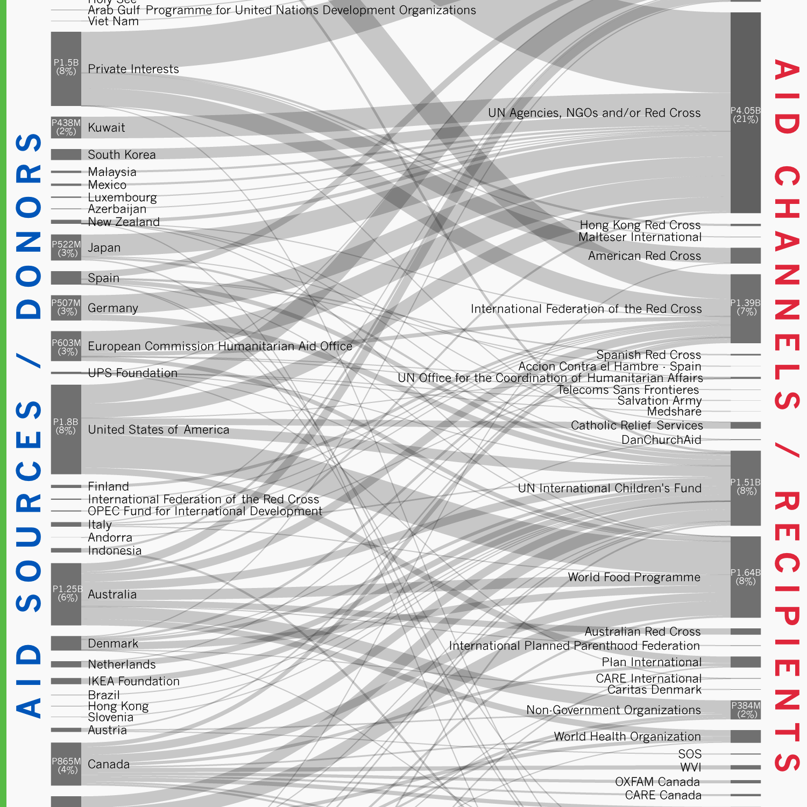
On Yolanda/Haiyan Foreign Aid: Who is giving what, and to whom?
SHOW ME THE MONEY - Foreign aid for the victims of Typhoon Yolanda (international name Haiyan) has reached staggering levels, with the United Nations Office for the Coordination of Humanitarian Affairs pegging the value at P19.53 billion. Data on these massive aid flows can be visualized to show the donors, and through which channels the donations were made.
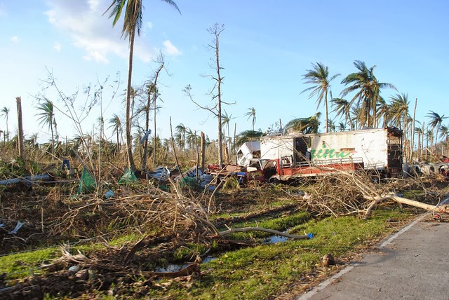
On True Filipino Resilience
Super Typhoon Yolanda (international codename Haiyan) struck the Philippine central islands last November 8, 2012.
On the Risk-Return Relationship of your Love Life
Chinese astrology tells of certain animal signs that, because of their inherent characteristics, have varying love compatibilities with each other. By applying statistics to superstition, we can also determine - generally - how nice, and how rocky, your love life ought to be based on your ruling animal.
On Giving Cash to the Poor
New research suggests that unconditional cash transfers to the poor may not be as misguided as usually perceived.
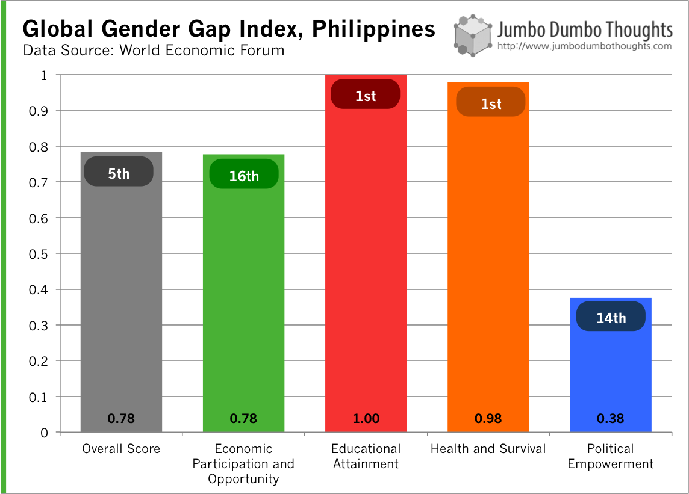
On the News: No Double Standard Here
NO DOUBLE STANDARD - The World Economic Forum published its Global Gender Gap Report 2013, which assesses the level of gender equality in different countries. The Philippines is ranked 5th highest in terms of gender equality, an improvement from past years, and the highest in Asia. Of the four aspects, the country performed well in terms of educational attainment and health, but was performed poorly in terms of economic and political participation.
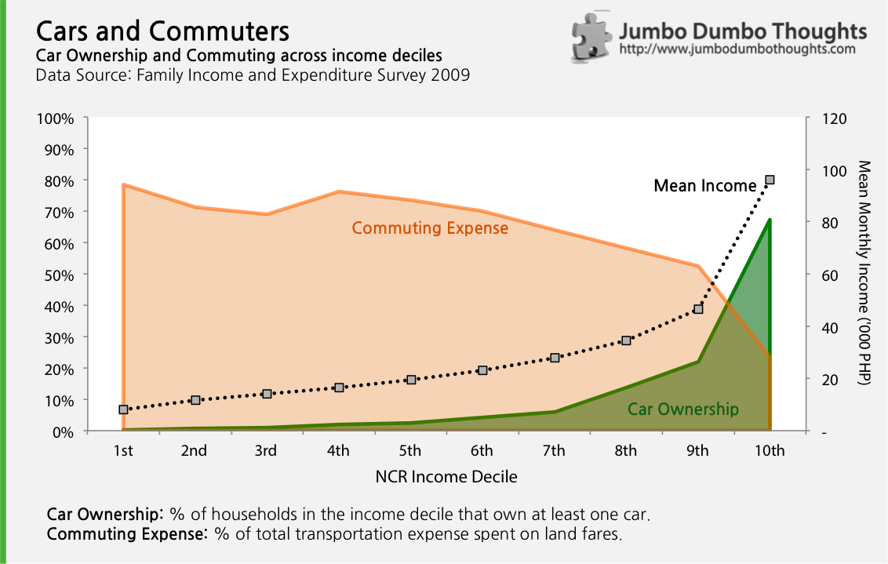
On Moving People, not Cars
With the rainy season in full swing, monstrous traffic jams yet again plague the Philippine capital. There is a lot of blame to go around - some say we're too reliant on private transportation, and others say undisciplined, unregistered, and reckless buses are the real culprit. Let's take a closer look at the data and see if it can provide some clarity.
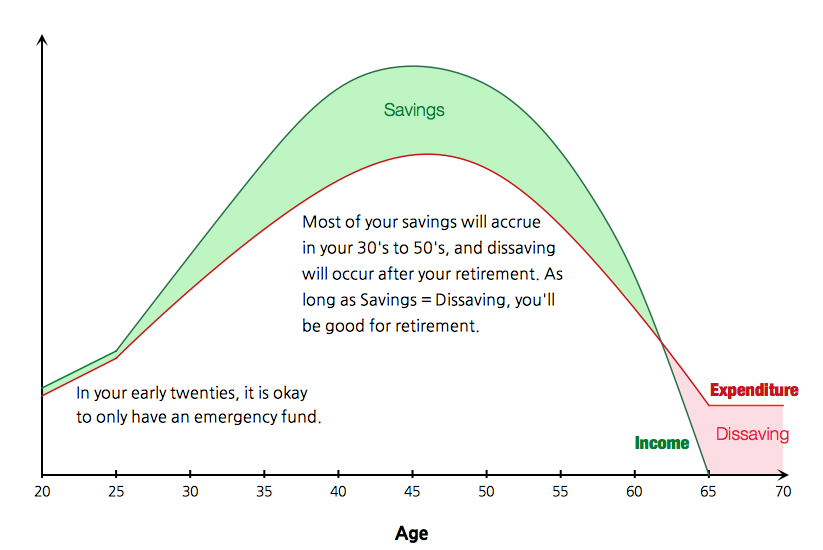
On Why You Shouldn't Save While You're Young
"Save while you're young" is one of the most common pieces of financial advice for the fresh young professional, but there is an economic argument that it can be overdone. In your early twenties, you're better off having fun, learning, and making new connections, because YOLOETSI (You Only Live Once and the Earnings Trajectory Strictly Increases).
On Crappy Opinion Polls and Belt Tightening
Online opinion surveys, especially about objectively determinable facts, are at the fringes of proper research. Why ask people what's in their shopping carts when you can just see for yourself?
On W.H. Taft Residences: Always the bridesmaid, never the bride
A building along Taft Avenue, W.H. Taft Residences, is still under construction after nearly 7 years, serving as a prime example of why diversified conglomerates should be wary of putting their foot in the real estate and construction industry, where stretched operating cycles require special attention.
On the UAAP Season 76: DLSU vs UST Finals Game 1
What a heartbreaking loss! After recovering from a 17-point deficit, the DLSU Green Archers struggled to make the winning basket in their finals matchup against the UST Growling Tigers. To come to terms with it, I've tried to analyze the outcome of the game the way I know best: through data. Let's take a look at the numbers on the hard court.
On Tax Evasion: They go to crooked politicians, anyway
The Tax Justice Institute estimated the amount of taxes lost due to tax avoidance for several countries, including the Philippines, using World Bank data on shadow economies (the unregulated, but not illegal part of the market).
On Traffic Accident Hotspots: EDSA and C-5
Ever wonder where and what types of vehicles are involved in road accidents along Manila's major thoroughfares? The MMDA twitter account can shed some light on that. Vehicular accidents reported by the MMDA along EDSA and C-5 are parsed to reveal the most dangerous intersections and flyovers, as well as expose buses and trucks as major accident culprits.
On the News: The Philippines is hitting the jackpot, and the cash is here to stay
This week in news: The Philippines posts large gaming revenue gains from recent resort and casino developments along Manila Bay, and the risk of capital flight remains relatively low amid prudent government finance and capital controls. Read more about them in this post.
On the Syrian Ghouta Chemical Attacks: UN Facts and Figures
The United Nations has recently concluded an investigation into the Syrian chemical attack last August 21, 2012 and concluded that chemicals, particularly the nerve agent Sarin, were indeed used against civilians, including children.
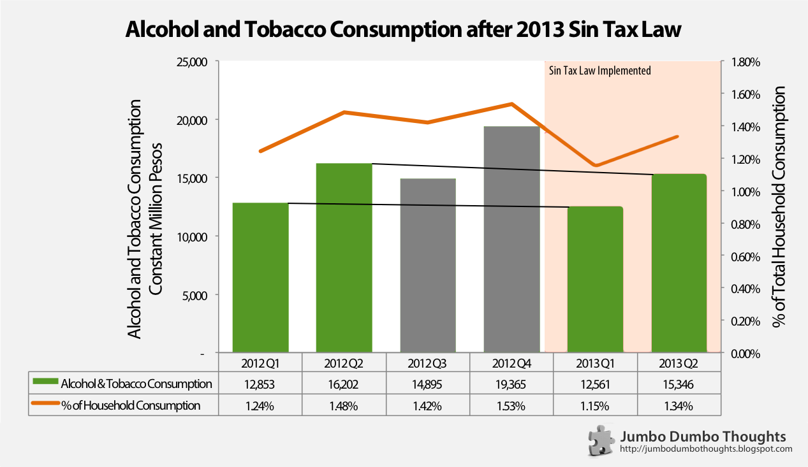
On the Effectiveness of Higher Sin Taxes
Last year, President Aquino signed the Sin Tax Bill. It's now been half a year since the new taxes were implemented, and it's a good time to assess how it's been achieving its goals so far.
On Buying from Abroad through Philpost Express Mail Service (EMS)
Ordering online from the Philippines is a difficult journey through inaccurate web trackers, inactive phone numbers, uncoordinated post offices, and high tax levies. However, if you really want the product and can't get it locally, then a little grit, persistence, and information should let you wrench your package out of the system faster than usual.
On the Great Gatsby Curve and Electric Fences in South Africa
The Great Gatsby tells the story of a man who claws his way from rags to riches, but finds that wealth alone cannot provide him the privileges of those born in the upper class. On the economic side of things, a new and hotly debated idea, dubbed the Great Gatsby curve, encapsulates this anecdote in data. It illustrates the possibility that income inequality might lead to lower social mobility in a country.
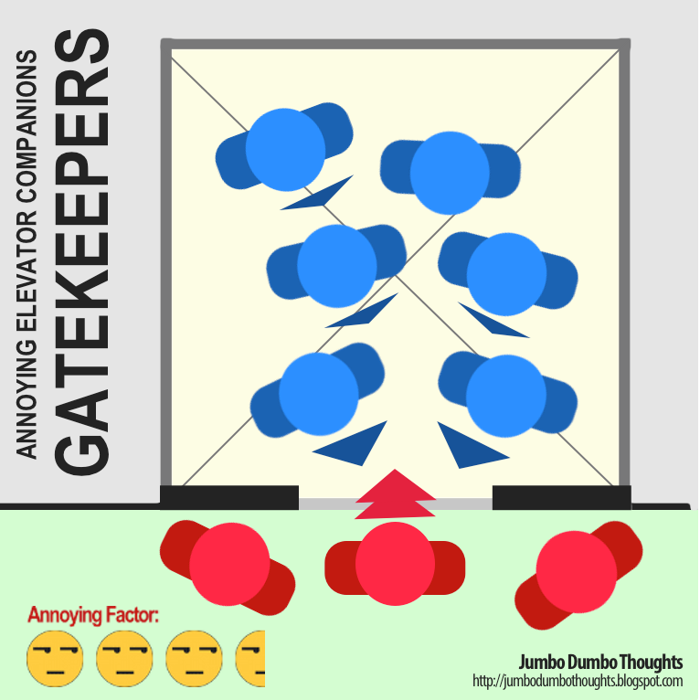
On Annoying Elevator Companions
Elevator rides, despite being tediously mind-numbing moments spent avoiding awkward eye contact, are a necessary evil of city life, but sometimes, there are just some elevator companions that are bent on making your elevator rides even more of an annoyance than they already are.

On What Manila Could Have Been
Manila wasn't always like this, however. It had a proper urban plan set out for it during the American colonial period, one that would, in my opinion truly make it the Pearl of the Orient.
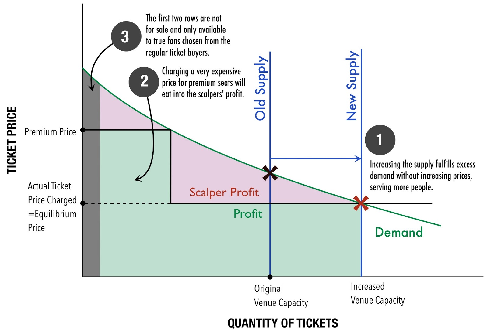
On the Economics of Ticket Scalping
We analyze ticket scalping during UAAP games using a simple demand and supply framework.
On Melting Coins and Negative Seignorage
We're running out of coins!
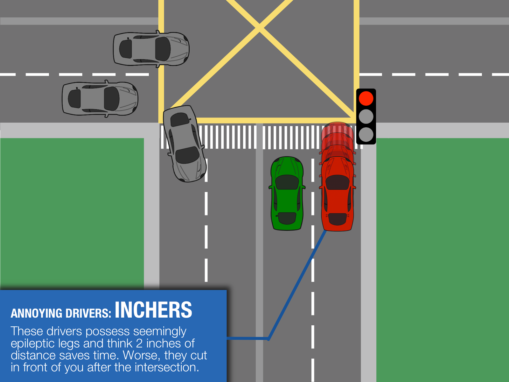
On Annoying Drivers
I hate slogging through Manila traffic. It's a horrible waste of time to spend an hour on an otherwise ten minute trip. What's worse - there are drivers who think that being a good driver means that you gain five seconds at the expense of multiple minutes for everyone else.
On Turkey's Bloody Friday
It's one thing to feel oppressed, but it's another thing to feel alone. Spread the word.
On Economics Education
Here’s what four years of economics education has done to my political leanings.
On IFTTT
IFTTT allows you to automate mundane internet tasks and boost ease of use through a simple 'If this, then that' workflow.
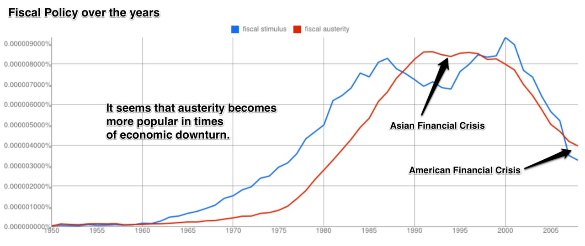
On Ngrams Part 2: The Philippine Economy
This installment reveals that growth is now more important than development, the Phillips curve’s tradeoffs do not necessarily apply to this measure, that fiscal policy is largely affected by current economic conditions, and much more.
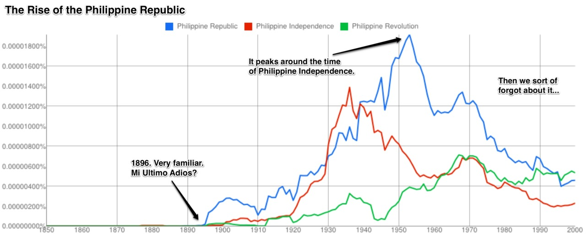
On Ngrams: Philippine History Quantified in Books
I’ve been messing around with the Google Ngram Viewer which was highlighted in a previous video post.
On Prize-Linked Savings
It’s basically a no-lose lottery; you get the chance to hit a big payday, but you still get to keep your money if you don’t.
On that Moment of Choice
No matter how rationally we try to act, that one moment of choice is still a purely emotional exercise.
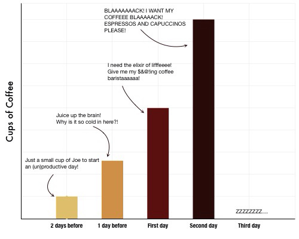
On Graphs: Finals Week
This finals week was definitely the most gruelling of my college life.
On Interest Rates and Mortality
A limited time on this earth makes time precious.
On Stochasticity
Sometimes the noise is more important than the signal.
On the Concorde
The Concorde. It’s a beauty; it’s just about the most beautiful man-made thing in the world. What a shame that it guzzled gas, made so much noise, and was eventually put out of service.
On Man's Insignificance
From this distant vantage point, the Earth might not seem of particular interest. But for us, it’s different. Look again at that dot. That’s here, that’s home, that’s us.
On the Opinion Entitlement Fallacy
The process of argumentation has, for me, always been a journey towards the discovery of truth. However, seldom does this process go well. People usually end up with more questions than answers and the matter is almost never resolved. One of the reasons is because of certain fallacies that just won’t die.
On Prices: Informative, Summative, and Coordinating
It is only through the voluntary coordination of the efforts of various economic agents that we can make the products we use today.
On Quotes from F.A. Hayek
“The curious task of economics is to demonstrate to men how little they know about what they can imagine they can design.”
On Video: Trial & Error and the God Complex
It seems so obvious when you listen to him, but it’s when you look around and see everyone trying to fix the world’s problems with their own preconceived master plans that you see how few people grasp the beautiful heuristic process of variation and selection.